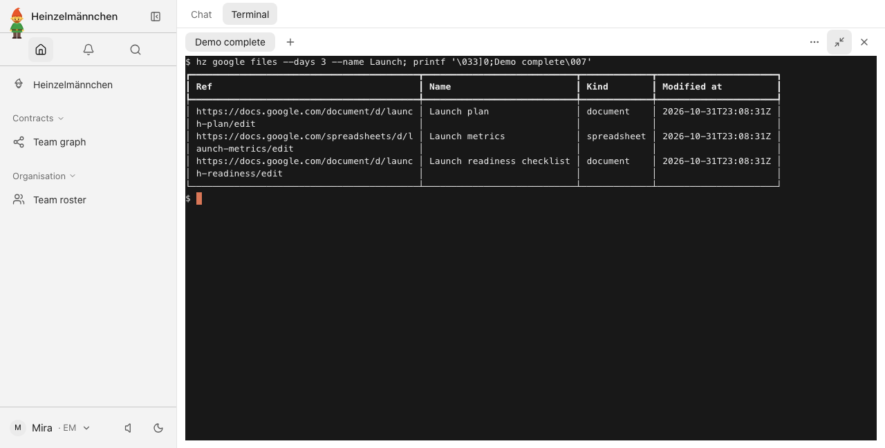
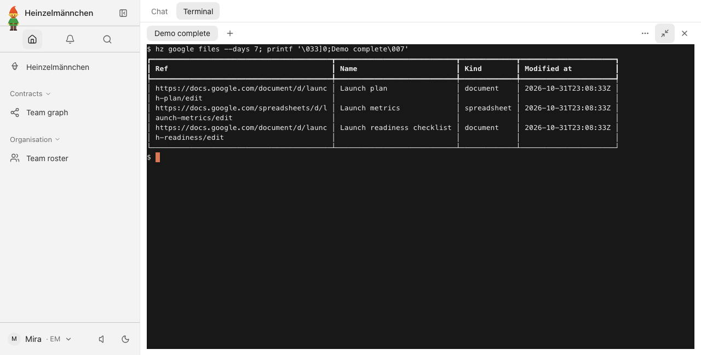
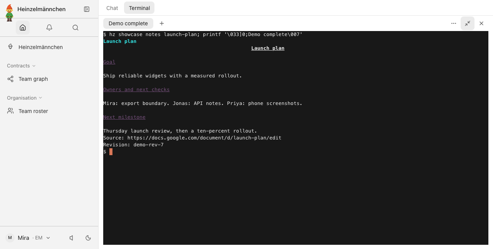
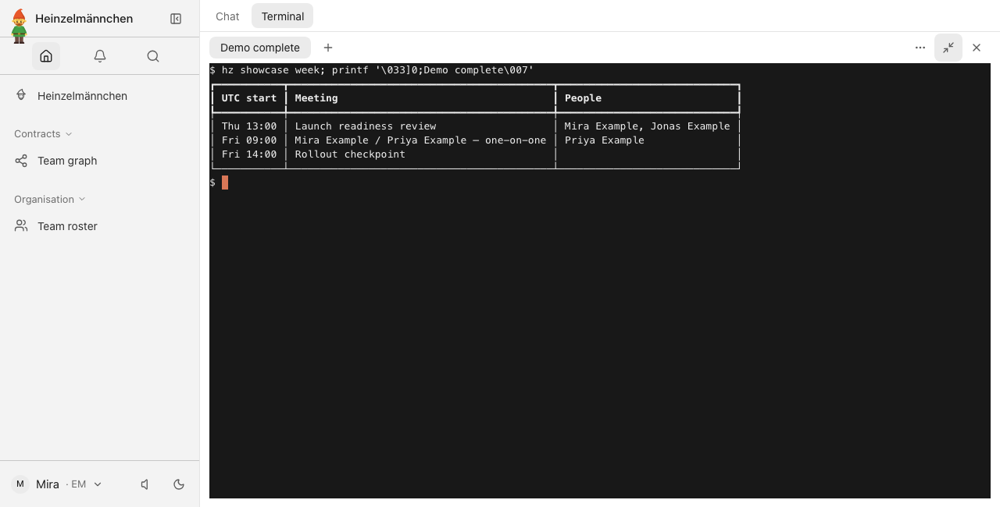
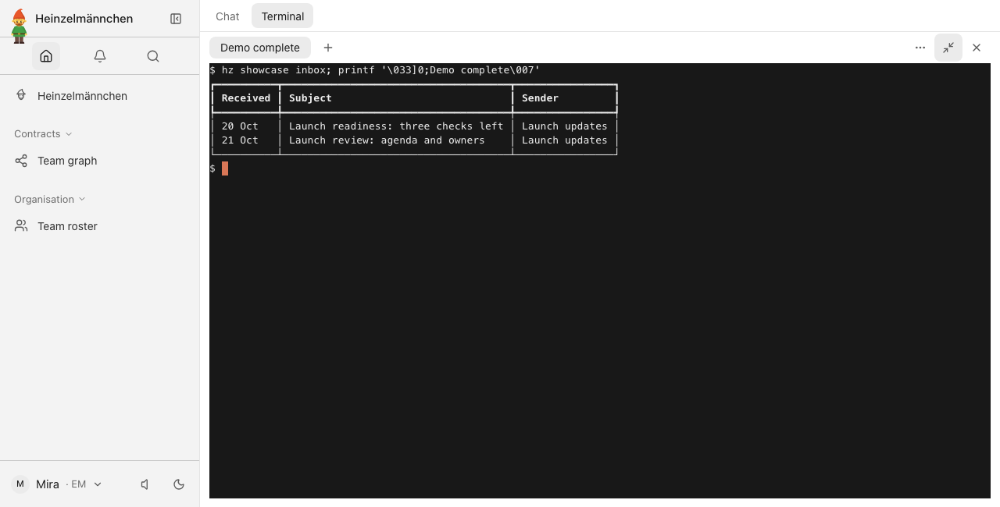
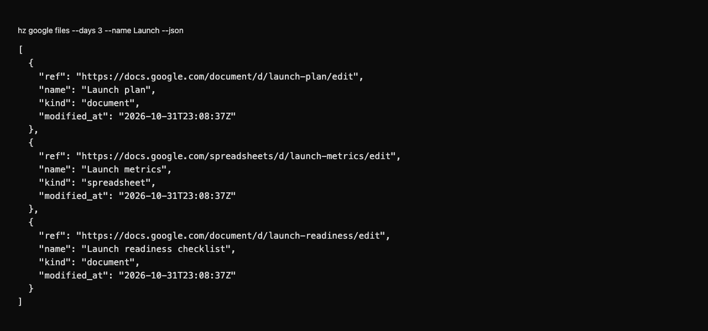
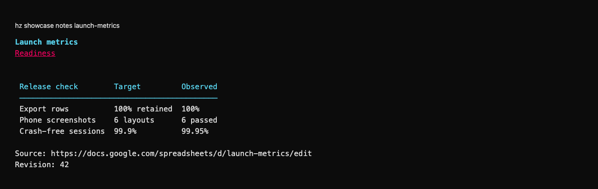
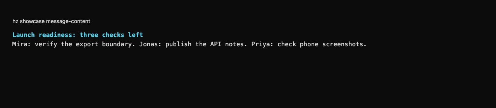

heinzel-google
Isolated demonstration profile · Core 0.9.1 · Review these captures before committing. Click an image to inspect it at full size.

UI · Recently changed launch files in the app terminal — fictional Workspace replies, real Google operation
UI · Explore seven days without a name filter — real Google operation over the fixture's same fictional files
UI · Read a Google Doc as workflow-ready text — fixture-only requester and fictional plan
UI · The launch week's meetings and attendees — fixture-only requester, real Calendar adapter over fictional events
UI · A focused launch-mail query — fixture-only requester, real Gmail adapter over fictional messages
CLI · Changed Docs and Sheets as structured data — real Google operation, fictional files
CLI · A Sheet becomes a readable table — fixture-only requester, real documents adapter and local replies
CLI · Read the next actions in a launch message — fixture-only requester, real Gmail adapter and local replies